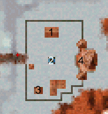

White Cap: Castle and Courtyard

| White Cap | |
| 1. | Bow Expert (4 Skill, 2,000 Gold) / Expert Mace Training (4 Skill, 2,000 Gold) |
| 2. | Well +30 to Might Temporarily |
| 3. | Shrine of Endurance (visit in April) |
| 4. | Castle of Eric Von Stromgaurd, Quest to stop winter, and The Battle Mage Quests to find a key. Master of Diplomacy on the roof (7 Skill, 200 Fame, 2,500 Gold) |
| 5. | Well +10 to Level Temporarily |
Leave us a message mgrounds@hotmail.com